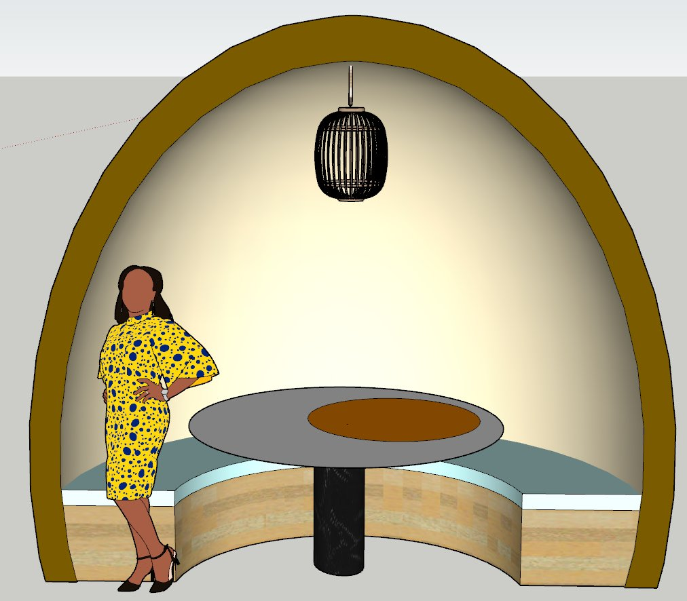
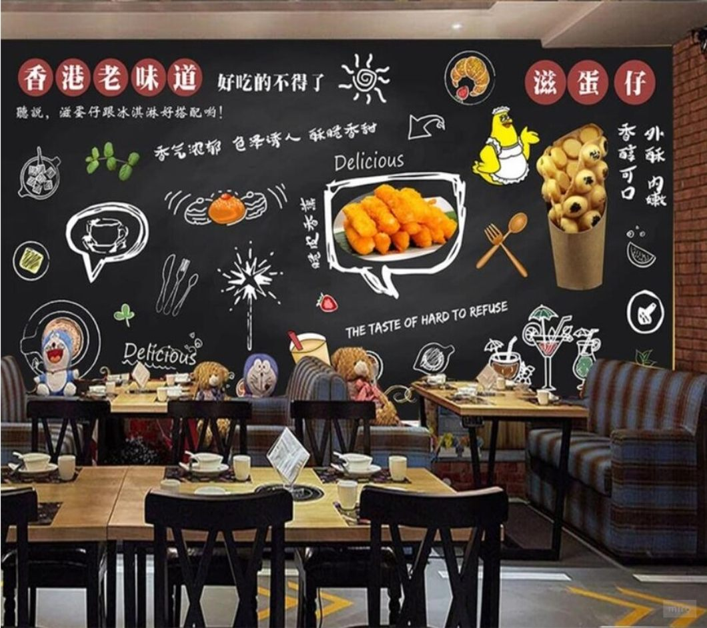
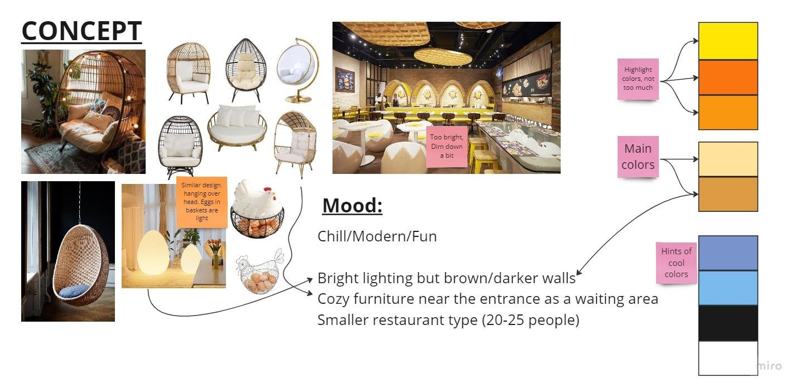
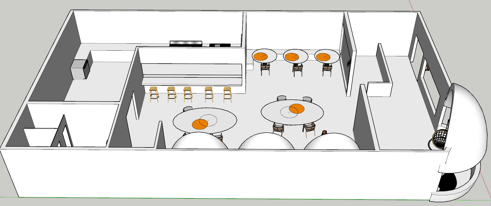
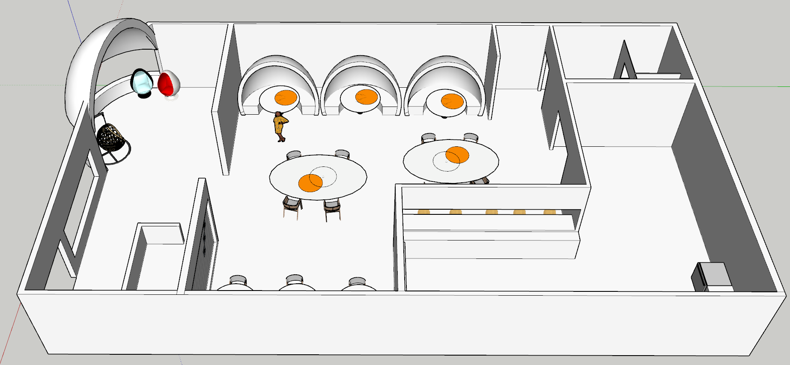
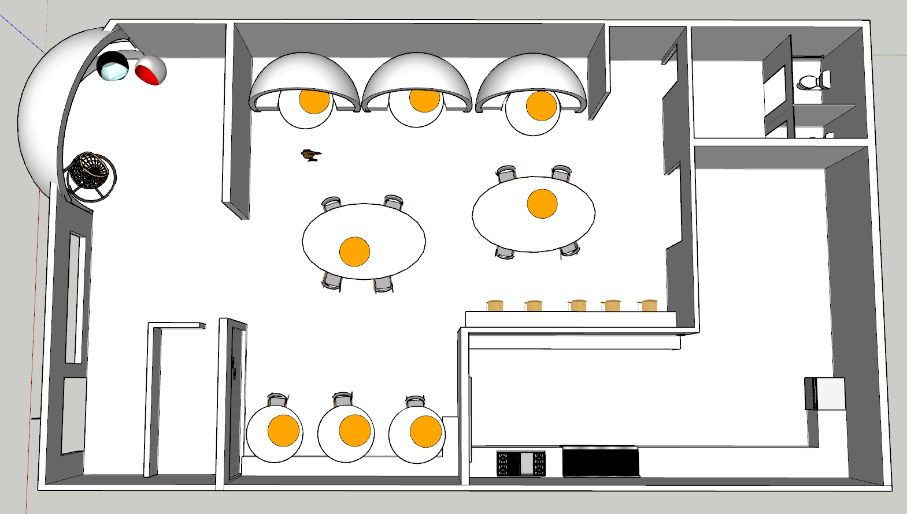
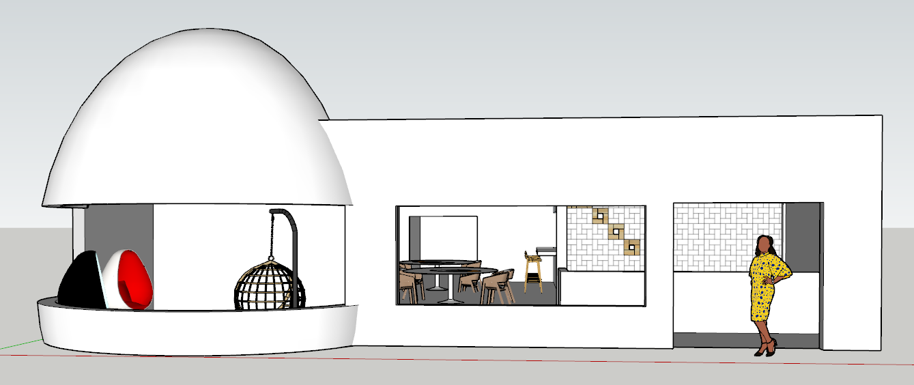
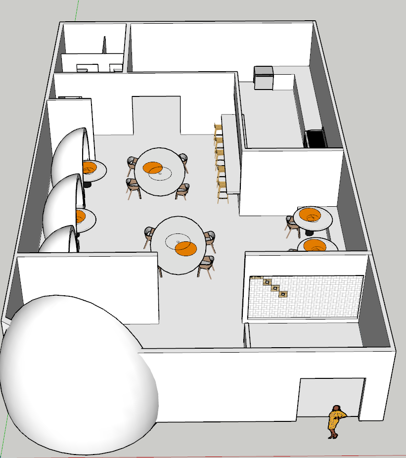

Case No. ZT-001 · Timeline · 2023
Bergmeyer Architecture
What I did
- Modeled and 2D drafted 5 commercial spaces (3 restaurants, 2 retail stores), including Boston Pro Shop and Shake Shack, from concept through SketchUp
- Supported 3–4 project teams by fabricating 3D-printed and laser-cut physical models and organizing 10+ project documentation packages
ProjectEgg-Themed Restaurant


Overview
A restaurant concept built around eggs. Every menu item is egg-focused, and the interior design and furniture take the shape of eggs too.
Process
-
Brainstorm in Miro
Fleshed out ideas by asking questions, like what impact the restaurant would have on the environment, animals and ecosystem.
-
Think past the menu
Looked for uses beyond its primary purpose, like turning the restaurant into a brand that sells merch.
-
Set the mood
Collected inspiration photos into a concept board for the look, colors and furniture.
-
Model it to scale
Built a 3D model of the restaurant, chairs and tables in SketchUp, with everything to scale.
Brainstorming in Miro


Fig. B: Mind map and research board.
Miro let me map out ideas and test them with questions before designing anything: what the restaurant would mean for its surroundings, and what else it could become besides a place to eat.
Inspiration


Fig. C: One of the photos that inspired me.
Concept board


Fig. D: Mood, furniture and colors.
The mood is chill, modern and fun: bright lighting with brown, darker walls, and cozy furniture by the entrance as a waiting area. It’s a smaller restaurant for 20–25 people. Creams and tans are the main colors, with yellow and orange highlights (not too much) and hints of cool colors.
SketchUp model










The restaurant, chairs and tables were all modeled to scale, from the egg-shaped booths to the tables with egg-yolk tops.